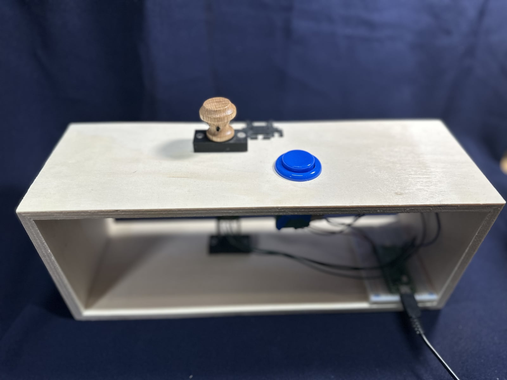
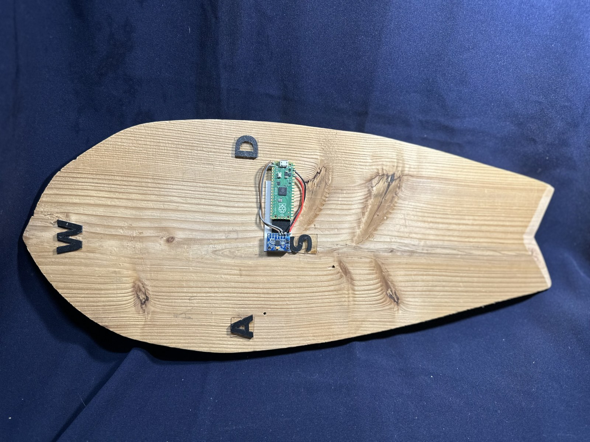
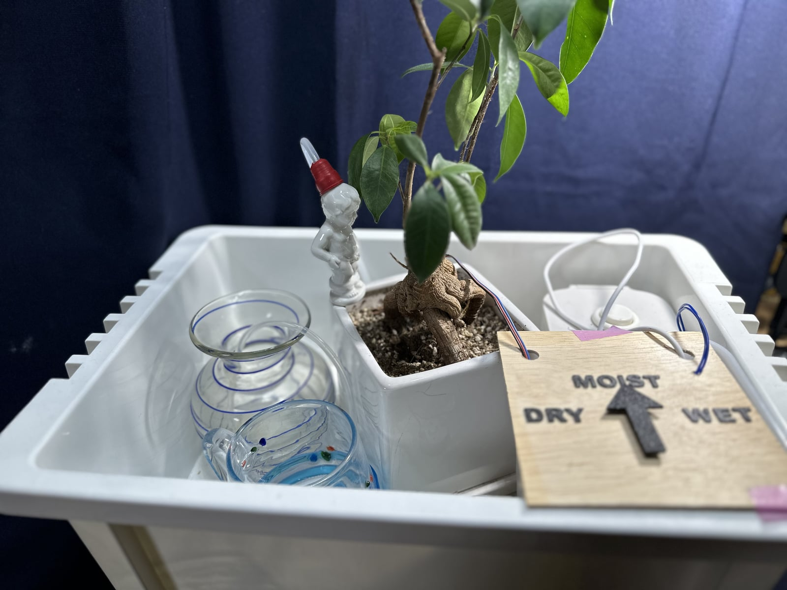
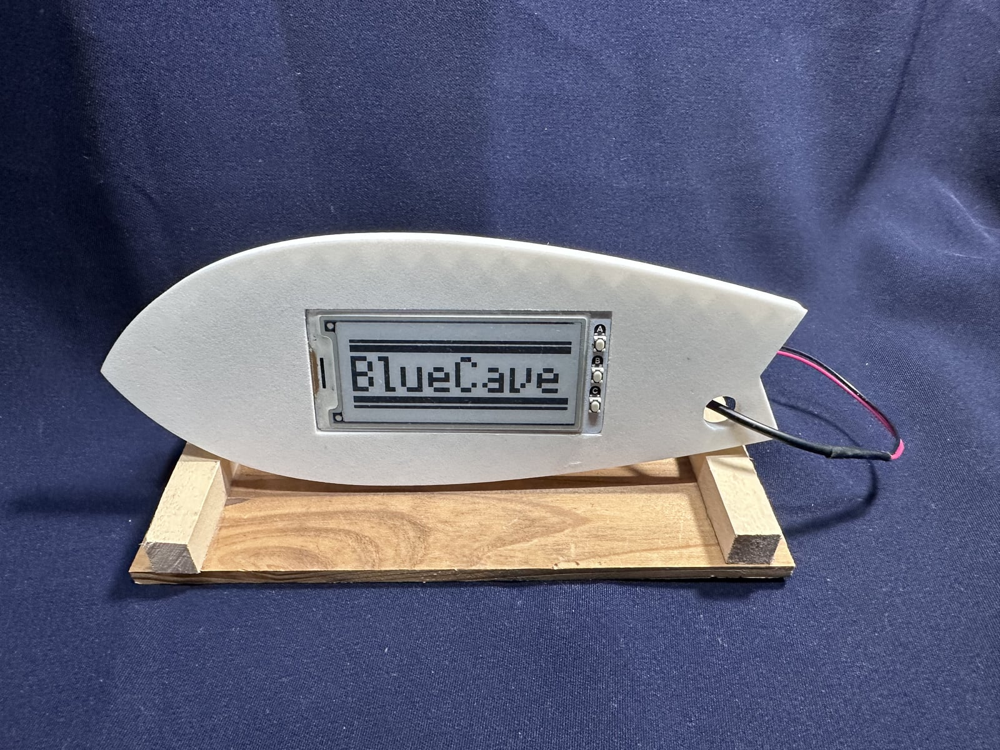
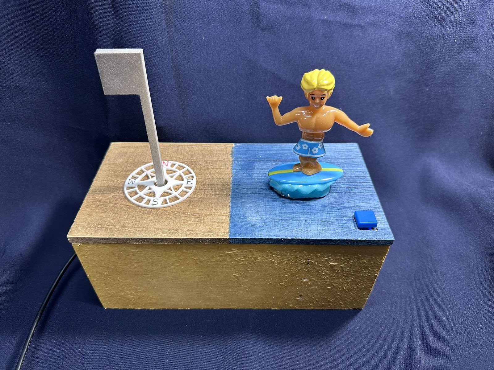
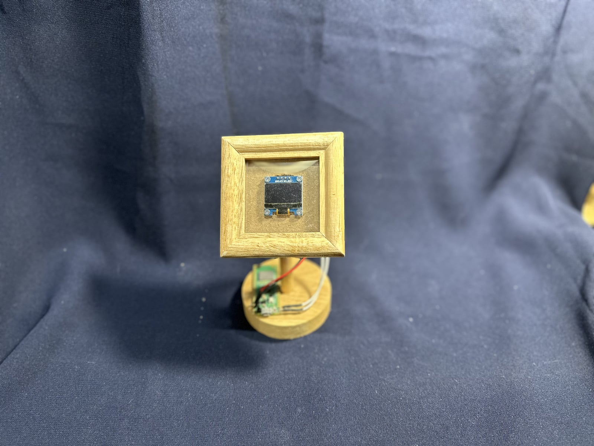
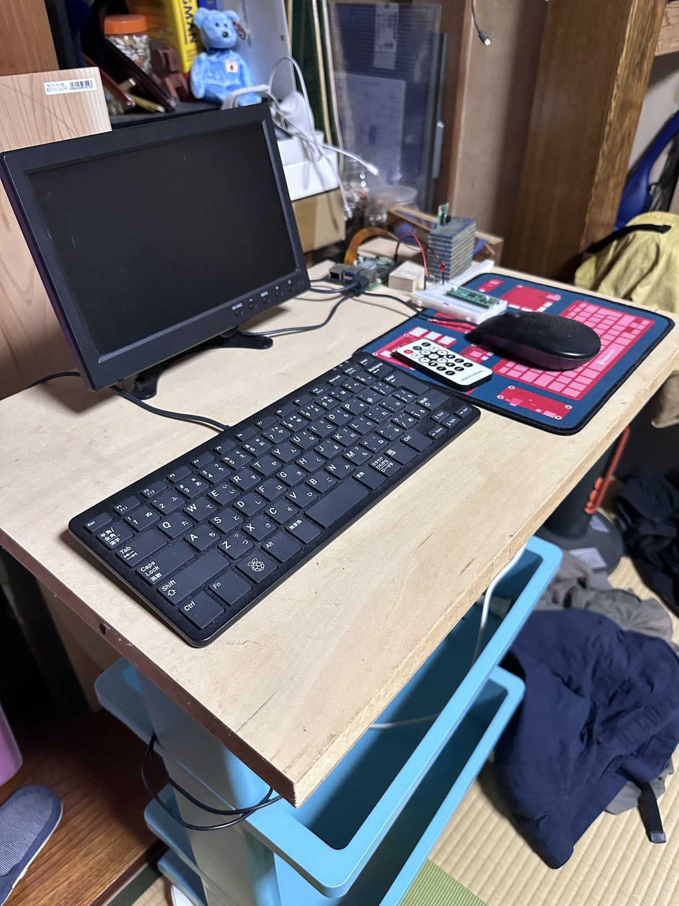

RASPBERRY PI PICO
IDEAS INTO REALITY
好奇心から生まれたもの。
手を動かして、ひとつずつ形に。

RASPBERRY PI PICO

RASPBERRY PI PICO

RASPBERRY PI PICO

RASPBERRY PI PICO W

RASPBERRY PI PICO Wサーフオブジェ

RASPBERRY PI PICO W

RASPBERRY PI 5
制作の過程は、JOURNALにも少しずつ。
JOURNALへ